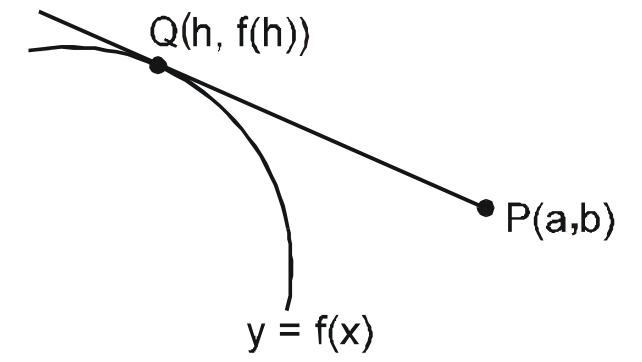
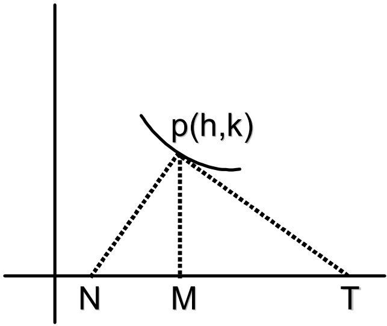
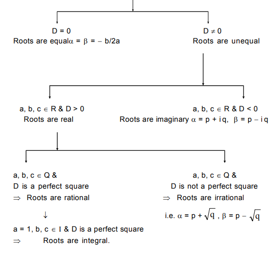

.png)
1. Distance Formula:
\[d = \sqrt{(x_1-x_2)^2+(y_1-y_2)^2}\]
2. Section Formula:
\[x = \frac{mx_2 \pm nx_1}{m \pm n};y = \frac{my_2 \pm ny_1}{m \pm n}\]
3. Centroid, Incentre & Excentre:
\[A. \; Centroid \; G\left(\frac{x_1+x_2+x_3}{3},\frac{y_1+y_2+y_3}{3}\right)\]
\[B. \; Incentre \; I\left(\frac{ax_1+bx_2+cx_3}{a+b+c},\frac{ay_1+by_2+cy_3}{a+b+c}\right)\]
\[C. \; Excentre \; I_1\left(\frac{-ax_1+bx_2+cx_3}{-a+b+c},\frac{-ay_1+by_2+cy_3}{-a+b+c}\right)\]
4. Area of a Triangle:
\[\Delta ABC = \frac{1}{2}\left|\begin{array}ax_1 & y_1 & 1 \\ x_2 & y_2 & 1 \\ x_3 & y_3 & 1
\end{array}\right|\]
5. Slope Formula:
\[Line \; Joining \; two \; points \; (x_1,y_1) \; \& \; (x_2,y_2),\;m = \frac{y_1-y_2}{x_1-x_2}\]
6. Condition of collinearity of three points:
\[\left|\begin{array}ax_1 & y_1 & 1 \\ x_2 & y_2 & 1 \\ x_3 & y_3 & 1 \end{array}\right| = 0\]
7. Angle between two straight lines
\[tan\theta = \left|\frac{m_1-m_2}{1+m_1m_2}\right|\]
8. Two Lines:
\[Let \; ax + by + c = 0 \; and \; a'x + b'y + c' = 0 \; are \; two \; lines, \; then\]
\[A. \; parallel \; if \; \frac{a}{a'}=\frac{b}{b'}\neq\frac{c}{c'}\]
\[B. \; Distance \; between \; two \; parallel \; lines \; =
\left|\frac{c_1-c_2}{\sqrt{a^2+b^2}}\right|\]
\[C.\; Perpendicular:\;If\;aa' + bb' = 0\]
9. A point and lines:
\[A. \; Distance \; between \; point \; and \; line \; = \left|\frac{ax_1 + by_1 + c}{\sqrt{a^2 +
b^2}}\right|\]
\[B. \; Reflection \; of \; a \; point \; about \; a \; line: \frac{x - x_1}{a} = \frac{y - y_1}{b}
= - 2 \frac{ax_1+by_1+c}{a^2+b^2}\]
\[C. \; Foot \; of \; the \; perpendicular \; from \; a \; point \; on \; the \; line \; is:\]
\[\frac{x - x_1}{a} = \frac{y - y_1}{b} = - \frac{ax_1+by_1+c}{a^2+b^2}\]
10. Bisectors of the angles between two lines:
\[\frac{ax+by+c}{\sqrt{a^2+b^2}} = \pm \frac{a'x+b'y+c'}{\sqrt{a'^2+b'^2}}\]
11. Condition of Concurrency:
\[of \; three \; straight \; lines \; a_1x+ b_1y + c_1= 0, i = 1,2,3 \; is \left|\begin{array}aa_1 &
b_1 & c_1 \\ a_2 & b_2 & c_2 \\ a_3 & b_3 & c_3 \end{array}\right| = 0\]
12. A pair of straight lines through origin:
\[ax^2 + 2hxy + by^2 = 0\]
\[If \; \theta \; is \; acute \; angle \; between \; the \; pair \; of \; the \; straight \; lines,
\; then \; tan\theta = \left|2\frac{\sqrt{h^2 - ab}}{a+b}\right|\]
1. Intercepts made by Circle:\[\mathrm{Circle \; x^2+y^2+2gx+2fy+c = 0 \; on \; the \; Axes:}\] \[A. \; 2 \sqrt{g^2-c} \; \; on \; x-axis \; \; \; B. \; 2 \sqrt{f^2-c} \; \; on \; y-axis\] 2. Parametric Equations of a Circle: \[x = h + rcos\theta \; ; \; \; y = k + rsin\theta\] 3. Tangent: \[A. \; Slope \; form: \; y = mx \pm a \sqrt{1+m^2}\] \[B. \; Point \; form: \; xx_1 + yy_1 = a^2 \; or \; T = 0\] \[C. \; Parametric \; form: \; xcos\alpha + ysin\alpha = a\] 4. Pair of Tangents from a Point: \[SS_1 = T^2\] 5. Length of a Tangent: \[Length \; of \; tangent \; is \; \sqrt{S_1}\] 6. Center at some point: \[Equation \; of \; center \; of \; a \; circle \; at \; (\alpha,\beta) \; with \; radius \; a \; is \\ (x-\alpha)^2+(y-\beta)^2 = a^2\] 7. Director Circle: \[x^2+y^2 = 2a^2 \; for \; x^2+y^2 = a^2\] 8. Chord of Contact: T = 0 \[A. \; Length \; of chord \; of \; contact = \frac{2LR}{\sqrt{R^2+L^2}}\] \[B. \; Area \; of \; the \; triangle \; formed \; by \; the \; pair \; of \; the \; tangents \; \& \; its \; chord \; of \; contact = \frac{RL^3}{R^2+L^2}\] \[C. \; Tangent \; of \; the \; angle \; between \; the \; pair \; of \; tangents \; from \; (x_1,y_1) = \frac{2RL}{L^2-R^2}\] \[D. \; Equation \; of \; the \; circle \; circumscribing \; the \; triangle \; PT_1T_2 \; is \\ = (x-x_1)(x+g)+(y-y_1)(y+f) = 0\] 9. Condition of orthogonality of Two Circles: \[2g_1g_2 + 2f_1f_2 = c_1 + c_2\] 10. Radical Axis: \[S_1 - S_2 = 0 \; i.e. \; 2(g_1-g_2)x + 2(f_1-f_2)y + (c_1-c_2) = 0\] 11. Family of Circles: \[S_1 + KS_2 = 0, \; S + KL = 0\]
1. All equations of Parabola:
| Equation of parabola | Coordinates of vertex | Axis of parabola | Coordinates of focus | Length of latus rectum | Equation of directrix |
|---|---|---|---|---|---|
| \[y^2=4ax\;(a>0)\] | \[(0,0)\] | \[Positive \; x-axis\] | \[(a,0)\] | \[4a\] | \[x+a=0\] |
| \[y^2=-4ax\;(a>0)\] | \[(0,0)\] | \[Negative \; x-axis\] | \[(-a,0)\] | \[4a\] | \[x-a=0\] |
| \[x^2=4ay\;(a>0)\] | \[(0,0)\] | \[Positive \; y-axis\] | \[(0,a)\] | \[4a\] | \[y+a=0\] |
| \[x^2=-4ay\;(a>0)\] | \[(0,0)\] | \[Negative \; y-axis\] | \[(0,-a)\] | \[4a\] | \[y-a=0\] |
| \[(y-\beta)^2=4a(x-\alpha)\] | \[(\alpha,\beta)\] | \[Parallel \; to \; x-axis\] | \[(a+\alpha,\beta)\] | \[4a\] | \[x+a=\alpha\] |
| \[(x-\alpha)^2=4a(y-\beta)\] | \[(\alpha,\beta)\] | \[Parallel \; to \; y-axis\] | \[(\alpha,a+\beta)\] | \[4a\] | \[y+a=\beta\] |
2. Parametric represention: \[x=at^2 \; \& \; y=2at\] 3. Tangents to the Parabola: \[For \; parabola \; y^2=4ax, \\ A. \; Slope \; form \; y = mx + \frac{a}{m} (m\neq0)\] \[B. \; Parametric \; form \; ty=x+at^2\] \[C. \; Point \; form \; T=0\] 4. Normals to the Parabola: \[A. \; (y-y_1)=-\frac{y_1}{2a}(x-x_1) \; at \; (x_1,y_1)\] \[B. \; y = (mx - 2am - am^3) \; at \; (am^2,-2am)\] \[C. \; (y+tx)=(2at+at^3) \; at \; (at^2,2at)\]
1. All equations of Ellipse:
| \[\frac{x^2}{a^2}+\frac{y^2}{b^2}=1 \] \[[a^2+b^2]\] | \[\frac{x^2}{b^2}+\frac{y^2}{a^2}=1 \] \[[a^2+b^2]\] | \[\frac{(x-\alpha)^2}{a^2}+\frac{(y-\beta)^2}{b^2}=1 \] \[[a^2+b^2]\] | \[\frac{(x-\alpha)^2}{b^2}+\frac{(y-\beta)^2}{a^2}=1 \] \[[a^2+b^2]\] | |
|---|---|---|---|---|
| \[Major \; axis\] | \[x-axis\] | \[y-axis\] | \[parallel \; to \; x-axis\] | \[parallel \; to \; y-axis\] |
| \[Minor \; axis\] | \[y-axis\] | \[x-axis\] | \[parallel \; to \; y-axis\] | \[parallel \; to \; x-axis\] |
| \[Equation \; of \; major \; axis\] | \[y=0\] | \[x=0\] | \[y=\beta\] | \[x=\alpha\] |
| \[Equation \; of \; minor \; axis\] | \[x=0\] | \[y=0\] | \[x=\alpha\] | \[y=\beta\] |
| \[Length \; of \; major \; axis\] | \[2a \; units\] | \[2a \; units\] | \[2a \; units\] | \[2a \; units\] |
| \[Length \; of \; major \; axis\] | \[2b \; units\] | \[2b \; units\] | \[2b \; units\] | \[2b \; units\] |
| \[Coordinates \; of \; centre\] | \[(0,0)\] | \[(0,0)\] | \[(\alpha,\beta)\] | \[(\alpha,\beta)\] |
| \[Coordinates \; of \; vertices\] | \[(\pm a,0)\] | \[(0,\pm a)\] | \[(\alpha\pm a,\beta)\] | \[(\alpha,\beta\pm a)\] |
| \[Eccentricity\] | \[e=\sqrt{1-\frac{b^2}{a^2}}\] | \[e=\sqrt{1-\frac{b^2}{a^2}}\] | \[e=\sqrt{1-\frac{b^2}{a^2}}\] | \[e=\sqrt{1-\frac{b^2}{a^2}}\] |
| \[Coordinates \; of \; foci\] | \[(\pm ae,0)\] | \[(0,\pm ae)\] | \[(\alpha\pm ae,\beta)\] | \[(\alpha,\beta \pm ae)\] |
| \[Distance \; between \; two \; foci\] | \[2ae \; unit\] | \[2ae \; unit\] | \[2ae \; unit\] | \[2ae \; unit\] |
| \[Length \; of \; latus \; rectum\] | \[\frac{2b^2}{a} \; unit\] | \[\frac{2b^2}{a} \; unit\] | \[\frac{2b^2}{a} \; unit\] | \[\frac{2b^2}{a} \; unit\] |
| \[Coordinates \; of \; the \; four\] \[ends \; of \; latera \; recta\] | \[\left(ae,\frac{b^2}{a}\right),\left(ae,-\frac{b^2}{a}\right),\] \[\left(-ae,\frac{b^2}{a}\right),\left(-ae,-\frac{b^2}{a}\right)\] | \[\left(\frac{b^2}{a},ae\right),\left(-\frac{b^2}{a},ae\right),\] \[\left(\frac{b^2}{a},-ae\right),\left(-\frac{b^2}{a},-ae\right)\] | \[\left(\alpha \pm ae, \beta \pm \frac{b^2}{a}\right)\] | \[\left(\alpha \pm \frac{b^2}{a}\right), \beta \pm ae\] |
| \[Equations \; of \; latera \; recta\] | \[x=\pm ae\] | \[y=\pm ae\] | \[x=\alpha \pm ae\] | \[y=\beta \pm ae\] |
| \[Equations \; of \; directrices\] | \[x=\pm \frac{a}{e}\] | \[y=\pm \frac{a}{e}\] | \[x=\alpha \pm \frac{a}{e}\] | \[y=\beta \pm \frac{a}{e}\] |
| \[Distance \; between \]\[ two \; directrices\] | \[\frac{2a}{e} \; unit\] | \[\frac{2a}{e} \; unit\] | \[\frac{2a}{e} \; unit\] | \[\frac{2a}{e} \; unit\] |
2. Auxiliary Circle: \[x^2+y^2=a^2\] 3. Parametric Representation: \[x=acos\theta \; \& \; y=bsin\theta\] 4. Position of a Point w.r.t. an Ellipse: \[The \; point \; P(x_1,y_1) \; lies \; outside, \; inside \; or \; on \; the \; ellipse \; accordingly \; as \; \frac{x_1^2}{a^2}+\frac{y_1^2}{b^2}-1 \; > \; or \; < \; or=0 \] 5.Tangents: \[A. \; Slope \; form \; y=mx \pm \sqrt{a^2m^2+b^2}\] \[B. \; Point \; form \; \frac{xx_1}{a^2}+\frac{yy_1}{b^2}=1\] \[C. \; Parametric \; form \; \frac{xcos\theta}{a}+\frac{ysin\theta}{b}=1\] 6. Normals: \[A. \; At \; the \; point \; P(x_1,y_1) \; is \; \frac{a^2x}{x_1}-\frac{b^2y}{y_1}=a^2-b^2\] \[B. \; At \; the \; point \; P(asec\theta,bcosec\theta) \; axsec\theta-bycosec\theta=a^2-b^2\] \[C. \; Equation \; of \; normals \; in \; terms \; of \; its \; slope \; 'm' \; are \; y=mx-\frac{(a^2-b^2)m}{\sqrt{a^2+b^2m^2}}\] 7. Director Circle: \[x^2+y^2=a^2+b^2\]
1. All equations of Hyperbola
| \[\frac{x^2}{a^2}+\frac{y^2}{b^2}=1\] | \[\frac{x^2}{b^2}+\frac{y^2}{a^2}=1\] | \[\frac{(x-\alpha)^2}{a^2}+\frac{(y-\beta)^2}{b^2}=1\] | \[\frac{(x-\alpha)^2}{b^2}+\frac{(y-\beta)^2}{a^2}=1\] | |
|---|---|---|---|---|
| \[Transverse \; axis\] | \[x-axis\] | \[y-axis\] | \[parallel \; to \; x-axis\] | \[parallel \; to \; y-axis\] |
| \[Conjugate \; axis\] | \[y-axis\] | \[x-axis\] | \[parallel \; to \; y-axis\] | \[parallel \; to \; x-axis\] |
| \[Equation \; of \; Transverse \; axis\] | \[y=0\] | \[x=0\] | \[y=\beta\] | \[x=\alpha\] |
| \[Equation \; of \; Conjugate \; axis\] | \[x=0\] | \[y=0\] | \[x=\alpha\] | \[y=\beta\] |
| \[Length \; of \; Transverse \; axis\] | \[2a \; units\] | \[2a \; units\] | \[2a \; units\] | \[2a \; units\] |
| \[Length \; of \; Conjugate \; axis\] | \[2b \; units\] | \[2b \; units\] | \[2b \; units\] | \[2b \; units\] |
| \[Coordinates \; of \; centre\] | \[(0,0)\] | \[(0,0)\] | \[(\alpha,\beta)\] | \[(\alpha,\beta)\] |
| \[Coordinates \; of \; vertices\] | \[(\pm a,0)\] | \[(0,\pm a)\] | \[(\alpha\pm a,\beta)\] | \[(\alpha,\beta\pm a)\] |
| \[Eccentricity\] | \[e=\sqrt{1+\frac{b^2}{a^2}}\] | \[e=\sqrt{1+\frac{b^2}{a^2}}\] | \[e=\sqrt{1+\frac{b^2}{a^2}}\] | \[e=\sqrt{1+\frac{b^2}{a^2}}\] |
| \[Coordinates \; of \; foci\] | \[(\pm ae,0)\] | \[(0,\pm ae)\] | \[(\alpha\pm ae,\beta)\] | \[(\alpha,\beta \pm ae)\] |
| \[Distance \; between \; two \; foci\] | \[2ae \; unit\] | \[2ae \; unit\] | \[2ae \; unit\] | \[2ae \; unit\] |
| \[Length \; of \; latus \; rectum\] | \[\frac{2b^2}{a} \; unit\] | \[\frac{2b^2}{a} \; unit\] | \[\frac{2b^2}{a} \; unit\] | \[\frac{2b^2}{a} \; unit\] |
| \[Coordinates \; of \; the \; four\] \[ends \; of \; latera \; recta\] | \[\left(ae,\frac{b^2}{a}\right),\left(ae,-\frac{b^2}{a}\right),\] \[\left(-ae,\frac{b^2}{a}\right),\left(-ae,-\frac{b^2}{a}\right)\] | \[\left(\frac{b^2}{a},ae\right),\left(-\frac{b^2}{a},ae\right),\] \[\left(\frac{b^2}{a},-ae\right),\left(-\frac{b^2}{a},-ae\right)\] | \[\left(\alpha \pm ae, \beta \pm \frac{b^2}{a}\right)\] | \[\left(\alpha \pm \frac{b^2}{a}\right), \beta \pm ae\] |
| \[Equations \; of \; latera \; recta\] | \[x=\pm ae\] | \[y=\pm ae\] | \[x=\alpha \pm ae\] | \[y=\beta \pm ae\] |
| \[Equations \; of \; directrices\] | \[x=\pm \frac{a}{e}\] | \[y=\pm \frac{a}{e}\] | \[x=\alpha \pm \frac{a}{e}\] | \[y=\beta \pm \frac{a}{e}\] |
| \[Distance \; between \]\[ two \; directrices\] | \[\frac{2a}{e} \; unit\] | \[\frac{2a}{e} \; unit\] | \[\frac{2a}{e} \; unit\] | \[\frac{2a}{e} \; unit\] |
2. Auxiliary Circle: \[x^2+y^2=a^2\] 3. Parametric Representation: \[x=asec\theta \; \& \; y=btan\theta\] 4. Position of a Point w.r.t. an Hyperbola: \[S_1 \equiv \frac{x_1^2}{a^2}-\frac{y_1^2}{b^2}-1 \; > \; or \; < \; or=0 \; according \; as \; the \; point \; (x_1,y_1) \; lies \; inside, \; on \; or \; outside \; the \; curve\] 5.Tangents: \[A. \; Slope \; form \; y=mx \pm \sqrt{a^2m^2+b^2}\] \[B. \; Point \; form \; \frac{xx_1}{a^2}-\frac{yy_1}{b^2}=1\] \[C. \; Parametric \; form \; \frac{xsec\theta}{a}-\frac{ytan\theta}{b}=1\] 6. Normals: \[A. \; At \; the \; point \; P(x_1,y_1) \; is \; \frac{a^2x}{x_1}+\frac{b^2y}{y_1}=a^2+b^2\] \[B. \; At \; the \; point \; P(asec\theta,btan\theta) \; is \; \frac{ax}{sec\theta}+\frac{by}{tan\theta}=a^2+b^2=a^1e^2\] \[C. \; Equation \; of \; normals \; in \; terms \; of \; its \; slope \; 'm' \; are \; y=mx+\frac{(a^2-b^2)m}{\sqrt{a^2-b^2m^2}}\]
1. Limit of a function f(x) is said to exist as x tends to a when, \[\lim_{h\rightarrow0^+}f(a-h)=\lim_{h\rightarrow0^+}f(a+h)=some \; finite \; value \; M\] 2. Indeterminant Forms: \[\frac{0}{0},\frac{\infty}{\infty},0\times\infty,\infty-\infty,\infty^0,0^0, \; and \; 1^\infty\] 3. Standard Limits: \[A. \; \lim_{x\rightarrow0}\frac{sinx}{x}=\lim_{x\rightarrow0}\frac{tanx}{x}=\lim_{x\rightarrow0}\frac{sinx^{-1}}{x} \\ =\lim_{x\rightarrow0}\frac{tanx^{-1}}{x}=\lim_{x\rightarrow0}\frac{e^x-1}{x}=\lim_{x\rightarrow0}\frac{\ell n(1+x)}{x}=1\] \[B. \; \lim_{x\rightarrow0}(1+x)^{1/x}=\lim_{x\rightarrow\infty}\left(1+\frac{1}{x}\right)^x=e\] \[C. \; \lim_{x\rightarrow0}\frac{a^x-1}{x}=log_ea, \; a>0\] \[D. \; \lim_{x\rightarrow a}\frac{x^n-a^n}{x-a}=na^{n-1}\] 4. Limits Using Expansion: \[A. \; a^x=1+\frac{x\ell na}{1!}+\frac{x^2\ell n^2a}{2!}+\frac{x^3\ell n^3a}{3!}+....., \; a>0\] \[B. \; e^x=1+\frac{x}{1!}+\frac{x^2}{2!}+\frac{x^3}{3!}+.....\] \[C. \; \ell n(1+x)=x-\frac{x^2}{2}+\frac{x^3}{3}-\frac{x^4}{4}+..... \; for \; -1 < x \le 1\] \[D. \; sinx=x-\frac{x^3}{3!}+\frac{x^5}{5!}-\frac{x^7}{7!}+.....\] \[E. \; cosx=1-\frac{x^2}{2!}+\frac{x^4}{4!}-\frac{x^6}{6!}+.....\] \[F. \; tanx=x+\frac{x^3}{3}+\frac{2x^5}{15}+.....\] \[G. \; for \; \left|x\right| < 1, \; n \in R(1+x)^n=1+nx+\frac{n(n-1)}{1.2}x^2+\frac{n(n-1)(n-2)}{1.2.3}x^3+.....\infty\]
1. Differentiation of some elementary function: \[A. \; \frac{d}{dx}(x^n)=nx^{n-1} \; \; \; \; B. \; \frac{d}{dx}(a^x)=a^x\ell na\] \[C. \; \frac{d}{dx}(\ell n \left|x\right|)=\frac{1}{x} \; \; \; \; D. \; \frac{d}{dx}(log_aX)=\frac{1}{x\ell na}\] \[E. \; \frac{d}{dx}(sinx)=cosx \; \; \; \; F. \; \frac{d}{dx}(cosx)=-sinx\] \[G. \; \frac{d}{dx}(secx)=secxtanx \; \; \; \; H. \; \frac{d}{dx}(cosecx)=-cosecxcotx\] \[I. \; \frac{d}{dx}(tanx)=sec^2x \; \; \; \; J. \; \frac{d}{dx}(cotx)=-cosec^2x\] \[K. \; \frac{d}{dx}(sin^{-1}x)=\frac{1}{\sqrt{a-x^2}} \; \; \; \; L. \; \frac{d}{dx}(cos^{-1}x)=-\frac{1}{\sqrt{a-x^2}}\] \[M. \; \frac{d}{dx}(tan^{-1}x)=\frac{1}{1+x^2} \; \; \; \; N. \; \frac{d}{dx}(cot^{-1}x)=-\frac{1}{1+x^2}(x\in R)\] \[O. \; \frac{d}{dx}(sec^{-1}x)=\frac{1}{|x|\sqrt{x^2-1}} \; \; \; \; P. \; \frac{d}{dx}(sec^{-1}x)=-\frac{1}{|x|\sqrt{x^2-1}} \; for \; x \in (-\infty,-1)\cup(1,infty)\] 2. Basic Theorems: \[A. \; \frac{d}{dx}(f\pm g)=f'(x)\pm g'(x) \; \; \; \; B. \; \frac{d}{dx}(kf(x))=k\frac{d}{dx}f(x)\] \[C. \; \frac{d}{dx}(f(x).g(x))=f(x)g'(x)+g(x)f'(x)\] \[D. \; \frac{d}{dx}\left(\frac{f(x)}{g(x)}\right)=\frac{g(x)f'(x)-f(x)g'(x)}{g^2(x)}\] \[E. \; \frac{d}{dx}(f(g(x)))=f'(g(x))g'(x)\] 3. Differentiation using substitution: \[Following \; substitutions \; are \; normally \; used \; to \; simplify \; these \; expression.\] \[A. \; \sqrt{x^2+a^2} \; by \; substituting \; x=atan\theta, \; where \; -\frac{\pi}{2}< \theta < \frac{\pi}{2}\] \[B. \; \sqrt{a^2-x^2} \; by \; substituting \; x=asin\theta, \; where \; -\frac{\pi}{2}\le \theta \le \frac{\pi}{2}\] \[C. \; \sqrt{x^2-a^2} \; by \; substituting \; x=asec\theta, \; where \; \theta\in[0,\pi], \; \theta \ne \frac{\pi}{2}\] \[D. \; \sqrt{\frac{x+a}{a-x}} \; by \; substituting \; x=acos\theta, \; where \; \theta\in[0,\pi]\] 4. Parametric Differentiation: \[If \; y=f(\theta) \& x=g(\theta) \; where \; \theta \; is \; a \; parameter, \; then \; \frac{dy}{dx}=\frac{dy/d\theta}{dx/d\theta}\] 5. Derivative of one function with respect to another: \[Let \; y=f(x); \; z=g(x) \; then \; \frac{dy}{dz}=\frac{dy/dx}{dz/dx}=\frac{f'(x)}{g'(x)}\] \[If \; F(x)=\left|\begin{array}af(x) & g(x) & h(x) \\ l(x) & m(x) & n(x) \\ u(x) & v(x) & w(x)\end{array}\right|, \; where \; f, \; g, \; h, \; l, \; m, \; n, \; u, \; v, \; w \; are \; differentiable \; functions \; of \; x,\] \[then \; F'(x)=\left|\begin{array} af'(x) & g'(x) & h'(x) \\ l(x) & m(x) & n(x) \\ u(x) & v(x) & w(x)\end{array}\right|+\left|\begin{array} af(x) & g(x) & h(x) \\ l'(x) & m'(x) & n'(x) \\ u(x) & v(x) & w(x)\end{array}\right|+\left|\begin{array} af(x) & g(x) & h(x) \\ l(x) & m(x) & n(x) \\ u'(x) & v'(x) & w'(x)\end{array}\right|\]
1. Equation of tangent and normal: \[Tangent \; at \; (x_1,y_1) \; is \; given \; by \; (y-y_1)=f'(x_1)(x-x_1); \; when, \; f'(x_1) \; is \; real\] \[And \; normal \; at \; (x_1,y_1) is (y-y_1)=-\frac{1}{f'(x_1)}(x-x_1), \; when \; f'(x_1) \; is \; non-zero \; real\] 2. Tangent from an external point: \[Given \; a \; point \; P(a, b) \; which \; does \; not \; lie \; on \; the \; curve \; y = f(x), \; then \; the \; equation \; of \; possible \; tangents \; to \; the \; curve \; y = f(x), \] \[passing \; through \; (a, b) \; can \; be \; found \; by \; solving \; for \; the \; point \; of \; contact \; Q, \; f'(h)=\frac{f(h)-b}{h-a}\]  \[And \; equation \; of \; tangent \; is \; y-b=\frac{f(h)-b}{h-a}(x-a)\] 3. Length of tangent, normal, subtangent, subnormal  \[A. \; PT=|k|\sqrt{1+\frac{1}{m^2}} \; = \; Length \; of \; Tangent \; ; \; \; \; B. \; PN=|k|\sqrt{1+m^2} \; = \; Length \; of \; Normal \; ;\] \[C. \; TM=\left|\frac{k}{m}\right|= \; Length \; of Subtangent \; ; \; \; \; D. \; MN=|km|=\; Length \; of \; Subnormal\] 4. Angle between the curves: \[Angle \; between \; two \; intersecting \; curves \; is \; defined \; as \; the \; acute \; angle \; between \; their \; tangents \; (or \; normals) \] \[at \; the \; point \; of \; intersection \; of \; two \; curves \; (as \; shown \; in \; figure), \; tan\theta=\left|\frac{m_1-m_2}{1+m_1m_2}\right|\] 5. Rolle's Theorem : \[If \; a \; function \; f \; defined \; on \; [a, b] \; is \] \[(i) \; continuous \; on \; [a, b] \] \[(ii) \; derivable \; on \; (a, b) \; and \] \[(iii) \; f(a) = f(b), \] \[then \; there \; exists \; at \; least \; one \; real \; number \; c \; between \; a \; and \; b \; (a < c < b) \; such \; that \; f'(c)=0\] 6. Lagrange's Mean Value Theorem (LMVT) : \[If \; a \; function \; f \; defined \; on \; [a, b] \; is \] \[(i) \; continuous \; on \; [a, b] \; and \] \[(ii) \; derivable \; on \; (a, b), \] \[then \; there \; exists \; at \; least \; one \; real \; numbers \; between \; a \; and \; b \; (a < c < b) \; \; such \; that \; \frac{f(b)-f(a)}{b-a}=f'(c)\] 7. Useful Formulae of Mensuration to Remember: \[A. \; Volume \; of \; a \; cuboid \; = \; \ell bh \] \[B. \; Surface \; area \; of \; cuboid \; = \; 2(\ell b + bh + h\ell) \] \[C. \; Volume \; of \; cube \; = \; a^3 \] \[D. \; Surface \; area \; of \; cube \; = \; 6a^2 \] \[E. \; Volume \; of \; a \; cone \; = \; \frac{1}{3}\pi r^2h \] \[F. \; Curved \; surface \; area \; of \; cone \; = \; \pi r \ell (\ell = \; slant \; height) \] \[G. \; Curved \; surface \; area \; of \; a \; cylinder \; = \; 2\pi rh \] \[H. \; Total \; surface \; area \; of \; a \; cylinder \; = \; 2\pi rh \; + \; 2\pi r \] \[I. \; Volume \; of \; a \; sphere \; = \; \frac{4}{3}\pi r^3 \] \[J. \; Surface \; area \; of \; a \; sphere \; = \; 4\pi r^2 \] \[K. \; Area \; of \; a \; circular \; sector \; = \; \frac{1}{2}r^2\theta, \; when \; \theta \; is \; in \; radians \] \[L. \; Volume \; of \; a \; prism \; = \; (area \; of \; the \; base) \; \times \; (height) \] \[M. \; Lateral \; surface \; area \; of \; a \; prism \; = \; (perimeter \; of \; the \; base) \; \times \; (height) \] \[N. \; Total \; surface \; area \; of \; a \; prism \; = \; (lateral \; surface \; area) \; + \; 2 (area \; of \; the \; base) \] \[(Note \; that \; lateral \; surfaces \; of \; a \; prism \; are \; all \; rectangle) \] \[O. \; Volume \; of \; a \; pyramid \; = \; \frac{1}{3}(area \; of \; the \; base) \; \times \; (height) \] \[P. \; Curved \; surface \; area \; of \; a \; pyramid \; = \; \frac{1}{2}(perimeter \; of \; the \; base) \; \times \; (slant \; height) \] \[(Note \; that \; slant \; surfaces \; of \; a \; pyramid \; are \; triangles)\]
1. Introduction: \[If \; f \; \& \; g \; are \; functions \; of \; x \; such \; that \; g'(x) \; = \; f(x) \; then, \; \int f(x)dx \; = \; g(x) \; + \; c \; \Leftrightarrow \; \frac{d}{dx}{g(x)+c} \; = \; f(x), \; where \; c \; is \; called \; the \; constant \; of \; integration\] 2. Standard Formula: \[A. \; \int(ax+b)^ndx=\frac{(ax+b)^{n+1}}{a(n+1)}+c, \; n \neq -1\] \[B. \; \int\frac{dx}{ax+b}=\frac{1}{a} \ell n (ax+b) +c\] \[C. \; \int e^{ax+b} dx=\frac{1}{a}e^{ax+b}+c\] \[D. \int a^{px+q} dx=\frac{1}{p}\frac{a^{px+q}}{\ell na}+c, \; a>0\] \[E. \int sin(ax+b)dx=-\frac{1}{a}cos (ax + b) + c\] \[F. \int cos (ax + b) dx=\frac{1}{a}sin (ax + b) + c\] \[G. \int tan(ax + b) dx=\frac{1}{a}\ell n \; sec(ax + b) + c\] \[H. \int cot(ax + b) dx=\frac{1}{a}\ell n \; sin(ax + b) + c\] \[I. \int sec^2 (ax + b) dx=\frac{1}{a}tan (ax + b) + c\] \[J. \int cosec^2(ax + b) dx=-\frac{1}{a}cot (ax + b) + c\] \[K. \int secx dx=\ell n (secx + tanx) + c \; OR \; \ell n tan \left(\frac{\pi}{4}+\frac{x}{2}\right)+c\] \[L. \int cosec x dx = \ell n (cosecx - cotx) + c, \; OR \; \ell n tan\frac{x}{2}+c, \; OR \; -\ell n (cosecx + cotx) + c\] \[M. \int \frac{dx}{\sqrt{a^2-x^2}}=sin^{-1}\frac{x}{a}+c\] \[N. \int \frac{dx}{a^2+x^2}=\frac{1}{a}tan^{-1}\frac{x}{a}+c\] \[O. \int \frac{dx}{|x|\sqrt{x^2-a^2}}=\frac{1}{a}sec^{-1}\frac{x}{a}+c\] \[P. \int \frac{dx}{\sqrt{x^2+a^2}}=\ell n\left[x+\sqrt{x^2+a^2}\right]+c\] \[Q. \int \frac{dx}{\sqrt{x^2-a^2}}=\ell n\left[x+\sqrt{x^2-a^2}\right]+c\] \[R. \int \frac{dx}{a^2-x^2}=\frac{1}{2a}\ell n\left|\frac{a+x}{a-x}\right|\] \[S. \int \frac{dx}{x^2-a^2}=\frac{1}{2a}\ell n\left|\frac{x-a}{x+a}\right|\] \[T. \int \sqrt{a^2-x^2}dx=\frac{x}{2}\sqrt{a^2-x^2}+\frac{a^2}{2}sin^{-1}\frac{x}{a}+c\] \[U. \int \sqrt{x^2+a^2}dx=\frac{x}{2}\sqrt{x^2+a^2}+\frac{a^2}{2}\ell n\left[\frac{x+\sqrt{x^2+a^2}}{a}\right] + c\] \[V. \int \sqrt{x^2-a^2}dx=\frac{x}{2}\sqrt{x^2-a^2}-\frac{a^2}{2}\ell n\left[\frac{x+\sqrt{x^2-a^2}}{a}\right] + c\] 3. Integration by Subsitutions: \[If \; we \; subsitute \; f(x) \; = \; t, \; then \; f'(x) dx = dt\] 4. Integration by Part : \[\int(f(x)g(x))dx=f(x)\int (g(x))dx-\int \left(\frac{d}{dx}(f(x))\int (g(x))dx\right)dx\] 5. Integration of type A: \[\int \frac{dx}{ax^2+bx+c}, \; \int \frac{dx}{\sqrt{ax^2+bx+c}}, \; \int \sqrt{ax^2+bx+c}dx\] \[Make \; the \; substitution \; x+\frac{b}{2a}=t\] 6. Integration of type B: \[\int \frac{px+q}{ax^2+bx+c}dx, \; \int \frac{px+q}{\sqrt{ax^2+bx+c}}dx, \; \int (px+q)\sqrt{ax^2+bx+c}dx\] \[Make \; the \; substitution \; x+\frac{b}{2a}=t, \]\[ then \; split \; the \; integral \; as \; some \; of \; two \; integrals \; one \; containing \; the \; linear \; term \; and \; the \; other \; containing \; constant \; term\] 7. Integration of type C: \[\int \frac{x^2+1}{x^4+Kx^2+1}dx \; \; where \; K \; is \; any \; constant\] \[Divide \; Nr \; and \; Dr \; by \; x^2 \; \& \; x\pm \frac{1}{x}=t\] 8. Integration of type D: \[\int \frac{dx}{(ax+b)\sqrt{px+q}}, \; OR \; \int \frac{dx}{(ax^2+bx+c)\sqrt{px+q}} \; \; \; Put \; px+q=t^2\] 9. Integration of type E: \[\int \frac{dx}{(ax+b)\sqrt{px^2+qx+r}}, \; \; \; Put \; ax + b=\frac{1}{t}\] \[\int \frac{dx}{(ax^2+b)\sqrt{px^2+q}}, \; \; \; Put \; x=\frac{1}{t}\] 10. Integration of trigonometric functions: \[A. \int \frac{dx}{a+bsin^2 x}, \; OR \; \int \frac{dx}{a+bcos^2 x}, \; OR \; \int \frac{dx}{asin^2 x+bsinxcosx+ccos^2 x} \; \; \; Put \; tanx=t\] \[B. \int \frac{dx}{a+bsin x}, \; OR \; \int \frac{dx}{a+bcos x}, \; OR \; \int \frac{dx}{a+bsinx+ccosx} \; \; \; Put \; tan\frac{x}{2}=t\] \[C. \int \frac{a.cos x b.sinx c}{\ell .cos x m.sin x n}dx \; \; \; Express \; Nr \; \equiv \; A(Dr)+B\frac{d}{dx}(Dr)+c \; \& \; proceed\]
1. Properties of definite integral: \[A. \; \int_a^b f(x)dx=\int_a^b f(t)dt, \; \; \; \; B. \; \int_a^b f(x)dx=-\int_b^a f(x)dx\] \[C. \; \int_a^b f(x)dx=\int_a^c f(x)dx+\int_c^b f(x)dx\] \[D. \; \int_{-a}^a f(x)dx=\int_0^a (f(x)+f(-x))dx= 2\int_0^a f(x)dx, \; \; \; when \; f(-x)=f(x)\] \[\hspace{8.2cm}= 0, \; \; \; when \; f(-x)=-f(x)\] \[E. \; \int_a^b f(x)dx=\int_a^b f(a+b-x)dx\] \[F. \; \int_0^a f(x)dx=\int_0^a f(a-x)dx\] \[G. \; \int_0^{2a} f(x)dx=\int_0^a (f(x)+f(2a-x))dx=2\int_0^a f(x)dx, \; \; \; when \; f(2a-x)=f(x)\] \[\hspace{9cm}= 0, \; \; \; when \; f(2a-x)=-f(x)\] \[H. \; If \; f(x) \; is \; a \; periodic \; function \; with \; period \; T, \; then\] \[\int_0^{nT} f(x)dx=n\int_0^T f(x)dx, \; \; n\in Z, \; \; \; \; \int_a^{a+nT} f(x)dx=n\int_0^T f(x)dx, \; \; n\in Z, \; \; a\in R\] \[\int_{mT}^{nT} f(x)dx=(n-m)\int_0^T f(x)dx, \; \; n\in Z, \; \; \; \; \int_{nT}^{a+nT} f(x)dx=\int_0^a f(x)dx, \; \; n\in Z, \; \; a\in R\] \[\int_{a+nT}^{b+nT} f(x)dx=\int_a^b f(x)dx, \; \; n\in Z, \; \; a,b\in R\] \[I. \; If \; \psi(x) \leq f(x) \leq \phi(x) \; for \; a \leq x \leq b,\] \[then \; \int_a^b \psi(x)dx \leq \int_a^b f(x)dx \leq \int_a^b \phi(x)dx\] \[J. \; If \; m \; \leq f(x) \leq M \; for \; a \leq x \leq b, \; then \; m (b - a) \leq \int_a^b f(x)dx \leq M (b - a)\] \[K. \; If \; f(x) \geq 0 \; on \; [a, b] \; then \; \int_a^b f(x)dx \geq 0\] 2. Leibnitz Theorem: \[If \; F(x)=\int_{g(x)}^{h(x)}f(t)dt, \; then \; \frac{dF(x)}{dx}=h'(x) f(h(x)) - g'(x) f(g(x))\]
1. Intervals: \[Intervals \; are \; basically \; subsets \; of \; R \; and \; are \; commonly \; used \; in \; solving \; inequalities \; or \; in \; finding \; domains. \; If \; there \; are \; two \; numbers \; a, \; b \in R \] \[such \; that \; a \le b, \; we \; can \; define \; four \; types \; of \; intervals \; as \; follows: \] \[Symbols \; Used:\] \[A. \; Open \; interval: \; (a, b) = {x : a < x < b} \; i.e. \; end \; points \; are \; not \; included. \; ( ) \; or \; ] [ \] \[B. \; Closed \; interval: \; [a, b]={x : a \leq x \leq b} \; i.e. \; end \; points \; are \; also \; included. \; [ ] \; This \; is \; possible \; only \; when \; both \; a \; and \; b \; are \; finite. \] \[C. \; Open-closed \; interval: \; (a, b]={x : a < x \leq b} \; ( ] \; or \; ] ] \] \[D. \; Closed - open \; interval: \; [a, b)={x : a \leq x < b} \; [ ) \; or \; [ [ \] \[The \; infinite \; intervals \; are \; defined \; as \; follows: \] \[A. (a,\infty)={x : x> a} \; \; \; \; \; \; B. [a, \infty) = {x : x \geq a}\] \[C. (-\infty, b) = {x : x < b} \; \; \; \; \; \; D. (-\infty, b]={x : x \leq b}\] \[E. (-\infty,\infty)={x : x \in R} \] 2. Properties of Modulus: \[For \; any \; a, b \in R\] \[|a| \geq 0, |a| = |-a|, \; \; \; \; |a| \geq a, \; \; \; \; |a| \geq -a, \; \; \; \; |ab| = |a| |b|,\] \[\left|\frac{a}{b}\right|=\frac{|a|}{|b|}, \; \; \; \; |a + b| \leq |a| + |b|, \; \; \; \; |a-b| \geq ||a| - |b||\] 3. Trigonometric Functions of Sum or Difference of Two Angles: \[A. \; sin (A \pm B) = sinA cosB \pm cosA sinB\] \[\therefore 2 sinA cosB = sin(A+B) + sin(A-B) \; and\] \[2 cosA sinB = sin(A+B) - sin(A-B)\] \[B. \; cos (A \pm B) = cosA cosB - sinA sinB\] \[\therefore 2 cosA cosB = cos(A+B) + cos(A-B) \; and\] \[2sinA sinB = cos(A-B) - cos(A+B)\] \[C. \; sin^2A - sin^2B = cos^2B - cos^2A = sin (A+B). sin (A-B)\] \[D. \; cos^2A - sin^2B = cos^2B - sin^2A = cos (A+B). cos (A-B)\] \[E. \; cot(A \pm B)=\frac{cotAcotB \pm 1}{cotB \pm cotA}\] \[F. \; tan(A+B+C)=\frac{tanA + tanB + tanC - tanA \; tanB \; tanC}{1 - tanA \; tanB - tanB \; tanC - tanC \; tanA}\] 4. Factorisation of the Sum or Difference of Two Sines or Cosines: \[A. \; sinC + sinD = 2sin\frac{C+D}{2}cos\frac{C-D}{2}\] \[B. \; sinC - sinD = 2sin\frac{C-D}{2}cos\frac{C+D}{2}\] \[C. \; cosC + cosD = 2cos\frac{C+D}{2}cos\frac{C-D}{2}\] \[D. \; cosC - cosD = -2sin\frac{C+D}{2}sin\frac{C-D}{2}\] 5. Multiple and Sub-multiple Angles: \[A. \; cos 2A = cos^2A - sin^2A = 2cos^2A - 1 = 1 - 2 sin^2A; \; \; \; 2 cos^2\frac{\theta}{2}=1+cos\theta; \; \; \; 2 sin^2\frac{\theta}{2}=1-cos\theta\] \[B. \; sin 2A = \frac{2 tanA}{1+tan^2A} \; \; \; cos 2A = \frac{1-tan^2A}{1+tan^2A} \; \; \; tan 2A = \frac{2 tanA}{1-tan^2A}\] \[C. \; sin 3A = 3 sinA - 4 sin^3A\] \[D. \; cos 3A = 4 cos^3A - 3 cosA\] \[E. \; tan 3A=\frac{3 tan A - tan^3A}{1 - 3 tan^2 A}\] 6. Important Trigonometric Ratios: \[sin n \pi = 0 ; \; \; \; \; cos n \pi = \pm1 ; \; \; \; \; tan n \pi = 0, \; \; where n \in I\] 7. Range of Trigonometric Expression: \[-\sqrt{a^2+b^2} \leq asin \theta + bcos \theta \leq \sqrt{a^2+b^2}\] 8. Sine and Cosine Series: \[sin\alpha + sin(\alpha+\beta) + sin(\alpha+2\beta)+.....+sin(\alpha+(n-1)\beta)=\frac{sin\frac{n\beta}{2}}{sin\frac{\beta}{2}}sin\left[\alpha+\frac{n-1}{2}\beta\right]\] \[cos\alpha + cos(\alpha+\beta) + cos(\alpha+2\beta)+.....+cos(\alpha+(n-1)\beta)=\frac{sin\frac{n\beta}{2}}{sin\frac{\beta}{2}}cos\left[\alpha+\frac{n-1}{2}\beta\right]\] 9. Trigonometric Equations: \[Principal Solutions:\] \[Solutions \; which \; lie \; in \; the \; interval \; [0, 2\pi) \; are \; called \; Principal \; solutions\] \[General Solution :\] \[A. \; sin \theta = sin \alpha \implies \theta = n \pi + (-1)^n \alpha \; where \; \alpha \in \left[-\frac{\pi}{2},\frac{\pi}{2}\right], \; n \in I\] \[B. \; cos \theta = cos \alpha \implies \theta = 2 n \pi \pm \alpha \; where \; \alpha \in [0,\pi], \; n \in I\] \[C. \; tan \theta = tan \alpha \implies \theta = n \pi + \alpha \; where \; \alpha \in \left[-\frac{\pi}{2},\frac{\pi}{2}\right], \; n \in I\] \[D. \; sin^2 \theta = sin^2 \alpha, \; cos^2 \theta = cos^2 \alpha, \; tan^2 \theta = tan^2 \alpha, \; \implies \theta = n\pi\pm\alpha\]
1. Quadratic Equation:
\[ax^2+bx+c=0, \; \; \; a\neq 0\]
\[x=\frac{-b\pm\sqrt{b^2-4ac}}{2a}, \; the \; expression \; b^2 - 4 a c = D \; is \; called \;
discriminant \; of \; quadratic \; equation\]
\[If \; \alpha, \beta \; are \; the \; roots, \; then \; \; A. \; \alpha + \beta = -\frac{b}{a}, \;
\; B. \; \alpha\beta=\frac{c}{a}\]
\[A \; quadratic \; equation \; whose \; roots \; are \; \alpha \; \& \; \beta, \; is \; (x -\alpha)
(x -\beta) = 0 \; i.e. \; x^2 - (\alpha + \beta) x + \alpha\beta = 0\]
2. Nature of Roots:
\[Consider \; the \; quadratic \; equation, \; ax^2+ bx + c = 0 \; having \; \alpha, \; \beta \; as
\; its \; roots; \; \; \; D = b^2 - 4ac \; then\]

3. Common Roots:
\[Consider \; two \; quadratic \; equations \; a_1x^2+ b_1x + c_1= 0 \; \& \; a_2x^2+ b_2x + c_2=
0\]
\[A. \; If \; two \; quadratic \; equations \; have \; both \; roots \; common, \; then \;
\frac{a_1}{a_2}=\frac{b_1}{b_2}=\frac{c_1}{c_2}\]
\[B. \; If \; only \; one \; root \; \alpha \; is \; common, \; then \; \; \; \alpha =
\frac{c_1a_2-c_2a_1}{a_1b_2-a_2b_1} = \frac{b_1c_2-b_2c_1}{c_1a_2-c_2a_1}\]
4. Range of Quadratic Expression:
\[If \; f(x)=ax^2+bx+c \; range \; in \; restricted \; domain: Given \; x \in [x_1,x_2]\]
\[A. \; If \; -\frac{b}{2a} \notin [x_1,x_2] \; then, f(x) \in [min(f(x_1),f(x_2)), \;
max(f(x_1),f(x_2))]\]
\[B. \; If \; -\frac{b}{2a} \in [x_1,x_2] \; then, f(x) \in [min(f(x_1),f(x_2),-\frac{D}{4a}), \;
max(f(x_1),f(x_2),-\frac{D}{4a})]\]
5. Location of Roots:
\[Let \; f(x) \; = ax² + bx + c, \; where \; a > 0 \; \& a,b,c \in R\]
\[A. \; Conditions \; for \; both \; the \; roots \; of \; f(x) = 0 \; to \; be \; greater \; than
\; aspecified \; number \; 'x_0' \; are \; b^2 - 4ac = 0; \; f(x_0) > 0 \; \& (- b/2a) > x0\]
\[B. \; Conditions \; for \; both \; the \; roots \; of \; f(x) = 0 \; to \; be \; smaller \; than
\; aspecified \; number \; 'x_0' \; are \; b^2 - 4ac = 0; \; f(x_0) > 0 \; \& (- b/2a) < x0\] \[C.
\; Conditions \; for \; both \; the \; roots \; of \; f(x)=0 \; to \; lie \; on \; either \;
side \; of \; the \; number \; 'x_0' \; is \; f(x_0) < 0\] \[D. \; Conditions \; for \; both \;
the \; roots \; of \; f(x)=0 \; to \; be \; confined \; between \; the \; numbers \; x_1 \; and
\; x_2, (x_1 < x_2) \] \[are \; b^2-4ac \geq 0; \; f(x_1)>0; \; f(x_2)>0 \; and \;
x_1<(-\frac{b}{2a}) < x_2\] \[E. \; Conditions \; for \; both \; the \; roots \; of \; f(x)=0 \;
to \; lie \; in \; the \; interval \; (x_1,x_2) \; i.e. \; x_1 < x < x_2 \; is \;
f(x_1).f(x_2) < 0\]
1. An arithmetic progression (A.P.): \[A. \; a, \; a + d, \; a + 2d,..... a + (n - 1) d \; is \; an \; A.P.\] \[Let \; a \; be \; the \; first \; term \; and \; d \; be \; the \; common \; difference \; of \; an \; A.P., \; then \; n^{th} \; term = t_n= a + (n - 1) d\] \[B. \; The \; sum \; of \; first \; n \; terms \; of \; A.P. \; are \; S_n= \frac{n}{2}[2a + (n - 1) d] = \frac{n}{2}[a+ \ell]\] \[C. \; r^{th} \; term \; of \; an \; A.P. \; when \; sum \; of \; first \; r \; terms \; is \; given \; is \; t_r= S_r- S_r- 1\] \[D. \; Properties \; of \; A.P.:\] \[i. \; If \; a, b, c \; are \; in \; A.P. \; \rightarrow 2 b = a + c \; \& \; if \; a, b, c, d \; are \; in \; A.P. \; \rightarrow a + d = b + c\] \[ii. \; Three \; numbers \; in \; A.P. \; can \; be \; taken \; as \; a - d, a, a + d; \; four \; numbers \; in \; A.P. \; can \; be \; taken \; as \; a - 3d, a - d, a + d, a + 3d; \] \[five \; numbers \; in \; A.P. \; are \; a - 2d, a - d, a, a + d, a + 2d \; \& \; \] \[six \; terms \; in \; A.P. \; are \; a - 5d, a - 3d, a - d, a + d, a + 3d, a + 5d \; etc\] \[iii. \; Sum \; of \; the \; terms \; of \; an \; A.P. \; equidistant \; from \; the \; beginning \; \& \; end \; = \; sum \; of \; first \; \& \; last \; term\] \[E. \; Arithmetic \; Mean \; (Mean \; or \; Average) \; (A.M.):\] \[If \; three \; terms \; are \; in \; A.P. \; then \; the \; middle \; term \; is \; called \; the \; A.M. \; between \; the \; other \; two, \; so \; if \; a, b, c \; are \; in \; A.P., \; b \; is \; A.M. \; of \; a \; \& \; c\] \[F. \; n - Arithmetic \; Means \; Between \; Two \; Numbers:\] \[If \; a, b \; are \; any \; two \; given \; numbers \; \& \; a, A_1, A_2,...., A_n, \; b \; are \; in \; A.P. \; then \; A_1, A_2,...A_n \; are \; the \; n \; A.M.'s \; between \; a \& b\] \[A_1= a + \frac{b-a}{n+1}, A_2= a + \frac{2(b-a)}{n+1},....., A_n= a + \frac{n(b-a)}{n+1}\] \[\sum_{r=1}^n A_r = nA \; where \; A \; is \; the \; single \; A.M. \; between \; a \; \& \; b\] 2. Geometric Progression: \[A. \; Properties \; of \; G.P.:\] \[a, \; ar, \; ar^2, \; ar^3, \; ar^4,...... \; is \; a \; G.P. \; with \; a \; as \; the \; first \; term \; \& \; r \; as \; common \; ratio\] \[i. \; n^{th} \; term = a r^{n-1}\] \[ii. \; Sum \; of \; the \; first \; n \; terms \; i.e. \; S_n = \frac{a(r^n-1)}{r-1} \; when \; r \neq 1\] \[\hspace{8cm} = na \; when \; r = 1\] \[iii. \; Sum \; of \; an \; infinite \; G.P. \; when \; |r| < 1 \; is \; given \; by, \; S_\infty=\frac{a}{1-r}(|r|< 1 )\] \[B. \; Geometric \; Means \; (Mean \; Proportional) \; (G.M.): \] \[If \; a, b, c> 0 \; are \; in \; G.P., \; b \; is \; the \; G.M. \; between \; a \& c, \; then \; b^2 = ac \] \[C. \; n - Geometric \; Means \; Between \; positive \; number \; a, b:\] \[If \; a, b \; are \; two \; given \; numbers \; \& \; a, G_1, G_2,....., G_n, \; b \; are \; in \; G.P.. \; Then \; G_1, G_2, G_3,...., G_n \; are \; n \; G.M.s \; between \; a \; \& \; b\] \[G_1 = a(b/a)^{1/n+1}, \; G_2 = a(b/a)^{2/n+1},.....,G_n = a(b/a)^{n/n+1}\] 3. Harmonic Mean (H.M.): \[If \; a, b, c \; are \; in \; H.P., \; b \; is \; the \; H.M. \; between \; a \& c, \; then \; b=\frac{2ac}{a+c}\] \[H.M. \; H \; of \; a_1, a_2, ........ a_n \; is \; given \; by \frac{1}{H}=\frac{1}{n} \left[\frac{1}{a_1}+\frac{1}{a_2}+.....+\frac{1}{a_n}\right]\] \[* \; Important \; Results:\] \[i. \; \sum_{r=1}^n (a_r \pm b_r) = \sum_{r=1}^n a_r \pm \sum_{r=1}^n b_r \; \; \; ii. \;\sum_{r=1}^n k a_r=k\sum_{r=1}^n a_r\] \[iii. \; \sum_{r=1}^n k=nk, \; where \; k \; is \; a \; constant\] \[iv. \; \sum_{r=1}^n r=1+2+3+.....+n=\frac{n(n+1)}{2}\] \[v. \; \sum_{r=1}^n r=1^2+2^2+3^2+.....+n^2=\frac{n(n+1)(2n+1)}{6}\] \[vi. \; \sum_{r=1}^n r=1^3+2^3+3^3+.....+n^3=\frac{n^2(n+1)^2}{4}\]
1. Statement of Binomial theorem: \[If \; a, b \in R \; and \; n \in N, \; then \; (a+b)^n= \; ^nC_0 \; a^nb^0 + \; ^nC_1 \; a^{n-1}b^1 + \; ^nC_2 \; a^{n-2}b^2 +.....+ \; ^nC_r \; a^{n-r}b^r +.....+ \; ^nC_n \; a^0b^n\] \[= \sum_{r=0}^n \; ^nC_r a^{n-r}b^r\] 2. Properties of Binomial Theorem: \[A. \; General term: T_{r+1}=\;^nC_r a^{n-r} b^r\] \[B. \; Middle term (s): \] \[i. \; If \; n \; is \; even, \; there \; is \; only \; one \; middle \; term, \; which \; is \; \left(\frac{n+2}{2}\right)^{th} term\] \[ii. \; If \; n \; is \; odd, \; there \; are \; two \; middle \; terms, \; which \; are \; \left(\frac{n+1}{2}\right)^{th} \; and \left(\frac{n+1}{2}+1\right)^{th} \; terms\] 3. Multinomial Theorem: \[(x_1+x_2+x_3+.....+x_k)^n= \sum_{r_1+r_2+...+r_k=n} \frac{n!}{r_1!r_2!...r_k!} \; x_1^{r_1}.x_2^{r_2}...x_k^{r_k}\] \[Here \; total \; number \; of \; terms \; in \; the \; expansion = \; ^{n+k-1}C_{k-1}\] 4. Application of Binomial Theorem: \[If \; (\sqrt{A}+B)^n = I + f \; where \; I \; and \; n \; are \; positive \; integers, \; n \; being \; odd \; and \; 0 < f < 1 \; then \; (I + f) f=k^n \; where \; A - B^2=k> 0 \; and \; \sqrt{A}-B < 1\] \[If \; n \; is \; an \; even \; integer, \; then \; (I + f) (1 - f)=k^n\] 5. Properties of Binomial Coefficients: \[A. \; ^nC_0+\; ^nC_1+\; ^nC_2+.....+\; ^nC_n=2^n\] \[B. \; ^nC_0-\; ^nC_1+\; ^nC_2-\; ^nC_3+.....+\;(-1)^n \; ^nC_n=0\] \[C. \; ^nC_0+\; ^nC_2+\; ^nC_4+.....=\; ^nC_1+\; ^nC_3+\; ^nC_5+.....=2^{n-1}\] \[D. \; ^nC_r+ \; ^nC_{r-1}= \; ^{n+1}C_r \; \; \; E. \; \frac{^nC_r}{^nC_{r-1}} = \frac{n-r+1}{r}\] 6. Binomial Theorem For Negative Integer Or Fractional Indices: \[(1-x)^n=1 \; + \; nx+\frac{n(n-1)}{2!}x^2+\frac{n(n-1)(n-2)}{3!}x^3+.....+\frac{n(n-1)(n-2).......(n-r+1)}{r!}x^r+ \;.....|x|< 1\] \[T_{r+1}=\frac{n(n-1)(n-2).........(n-r+1)}{r!}x^r \]
1. Arrangement: \[Number \; of \; permutations \; of \; n \; different \; things \; taken \; r \; at \; a \; time = \;^nP_r= n (n - 1) (n - 2)... (n - r + 1)=\frac{n!}{(n-r)!}\] 2. Circular Permutation: \[The \; number \; of \; circular \; permutations \; of \; n \; different \; things \; taken \; all \; at \; a \; time \; is: \; (n - 1)!\] 3. Selection: \[Number \; of \; combinations \; of \; n \; different \; things \; taken \; r \; at \; a \; time = \; ^nC_r=\frac{n!}{n!(n-r)!}=\frac{^nP_r}{r!}\] \[The \; number \; of \; permutations \; of \; 'n' \; things, \; taken \; all \; at \; a \; time, \; when \; 'p' \; of \; them \; are \; similar \; \& \; of \; one \; type, \; q \; of \; them \; are \; similar \; \& \; of \; another \; type,\] \['r' \; of \; them \; are \; similar \; \& \; of \; a \; third \; type \; \& \; the \; remaining \; n - (p + q + r) \; are \; all \; different \; is \frac{n!}{p!q!r!}\] 4. Selection of one or more objects: \[A. \; Number \; of \; ways \; in \; which \; atleast \; one \; object \; be \; selected \; out \; of \; 'n' \; distinct \; objects \; is \; ^nC_1+ \; ^nC_2+ \; ^nC_3 +.....+ \; ^nC_n = 2^n-1\] \[B. \; Number \; of \; ways \; in \; which \; atleast \; one \; object \; may \; be \; selected \; outof \; 'p' \; alike \; objects \; of \; one \; type \; 'q' \; alike \; objects \; of \; second \; type \] \[and \; 'r' \; alike \; of \; third \; type \; is \; (p + 1) (q + 1) (r + 1) - 1\] \[C. \; Number \; of \; ways \; in \; which \; atleast \; one \; object \; may \; be \; selected \; from \; 'n' \; objects \; where \; 'p' \; alike \; of \; one \; type \; 'q' \; alike \; of \; second \; type \] \[and \; 'r' \; alike \; of \; third \; type \; and \; rest \; n - (p + q + r) \; are \; different, \; is \; (p + 1) (q + 1) (r + 1) 2n^{n-(p+q+r)}-1\] 5. Multinomial Theorem: \[Coefficient \; of \; x^r \; in \; expansion \; of \; (1 - x)^{-n}= \; ^{n+r-1}C_r(n \in N)\] \[Let \; N = p^a q^b r^c..... \; where \; p, q, r..... \; are \; distinct \; primes \; \& \; a, b, c..... \; are \; natural \; numbers \; then: \] \[A. \; The \; total \; numbers \; of \; divisors \; of \; N \; including \; 1 \; \& \; N \; is \; = (a + 1) (b + 1) (c + 1).....\] \[B. \; The \; sum \; of \; these \; divisors \; is= (p^0 + p^1 + p^2 +.....+ p^a) (q^0 + q^1 + q^2 +.....+ q^b) (r^0 + r^1 + r^2 +.....+ r^c).....\] \[C. \; Number \; of \; ways \; in \; which \; N \; can \; be \; resolved \; as \; a \; product \; of \; two \; factors \; is = \frac{1}{2}(a+1)(b+1)(c+1)..... \; if \; N \; is \; not \; a \; perfect \; square\] \[\hspace{8cm} =\frac{1}{2}[(a+1)(b+1)(c+1).....+1 \; if \; N \; is \; a \; perfect \; square]\] \[D. \; Number \; of \; ways \; in \; which \; a \; composite \; number \; N \; can \; be \; resolved \; into \; two \; factors \; which \; are \; relatively \; prime \; (one \; coprime) \; to \; each \; other;\] \[is \; equal \; to \; 2^{n-1} \; where \; n \; is \; the \; number \; of \; different \; prime \; factor \; in \; N\] 6. Dearrangement: \[Number \; of \; ways \; in \; which \; 'n' \; letters \; can \; be \; put \; in \; 'n' \; corresponding \; envelopes \; such \; that \; no \; letter \; goes \; to \; correct \; envelope \; is \] \[n! \left(1- \frac{1}{1!} + \frac{1}{2!} - \frac{1}{3!} + \frac{1}{4!}+.....+(-1)^n\frac{1}{n!}\right)\]
1. Classical (A priori) Definition of Probability: \[If \; an \; experiment \; results \; in \; a \; total \; of \; (m + n) \; outcomes \; which \; are \; equally \; likely \; and \; mutually \; exclusive \; with \; one \; another \; and \] \[if \; 'm' \; outcomes \; are \; favorable \; to \; an \; event \; 'A' \; while \; 'n' \; are \; unfavorable, \; then \; the \; probability \; of \; occurrence \; of \; the \; event \; 'A'\] \[= P(A) = m/(m+n)= \frac{n(A)}{n(S)}\] \[We \; say \; that \; odds \; in \; favour \; of \; 'A' \; are \; m : n, \; while \; odds \; against \; 'A' \; are \; n : m\] \[P(\bar A)=\frac{n}{m+n}=1-P(A)\] 2. Different Properties of probability: \[A. \; Addition \; theorem \; of \; probability:\] \[P(A \cup B) = P(A) + P(B) - P(A \cap B)\] \[B. \; De Morgan's \; Laws:\] \[i. \; (A \cup B)^c= A^c \cap B^c \; \; \; \; ii. \; (A \cap B)^c= A^c \cup B^c\] \[C. \; Distributive \; Laws: \] \[i. \; A \cup (B \cap C)=(A \cup B) \cap (A \cup C) \; \; \; \; ii. \; A \cap (B \cup C)=(A \cap B) \cup (A \cap C)\] \[iii. \; P(A \; or \; B \; or \; C) = P(A) + P(B) + P(C)- P(A \cap B) - P(B \cap C) - P(C \cap A)+ P(A \cap B \cap C)\] \[iv. \; P(at \; least \; two \; of \; A,B,C \; occur) = P(A \cap B) + P(B \cap C) + P(C \cap A) - 2P(A \cap B \cap C)\] \[v. \; P(exactly \; two \; of \; A,B,C \; occur) = P(A \cap B) + P(B \cap C) + P(C \cap A) - 3P(A \cap B \cap C)\] \[vi. \; P(exactly \; one \; of \; A,B,c \; occur) = P(A) + P(B) + P(C)- 2P(A \cap B) - 2P(B \cap C) - 2P(C \cap A)+ 3P(A \cap B \cap C)\] 3. Conditional Probability: \[P(A/B)= \frac{P(A \cap B)}{P(B)}\] 4. Binomial Probability Theorem: \[If \; an \; experiment \; is \; such \; that \; the \; probability \; of \; success \; or \; failure \; does \; not \; change \; with \; trials, \; then \; the \; probability \; of \; getting \] \[exactly \; r \; success \; in \; n \; trials \; of \; an \; experiment \; is \; ^nC_r p^r \; q^n-r, \; where \; 'p' \; is \; the \; probability \; of \; a \; success \; and \; q \; is \; the \; probability \; of \; a \; failure. \] \[Note \; that \; p+q=1\] 5. Expectation: \[If \; a \; value \; M_i \; is \; associated \; with \; a \; probability \; of \; p_i, \; then \; the \; expectation \; is \; given \; by \sum p_iM_i\] 6. Total Probability Theorem: \[P(A)= \sum_{i=1}^n P(B_i). P(A/B_i)\] 7. Bayes's Theorem: \[If \; an \; event \; A \; can \; occur \; with \; one \; of \; the \; n \; mutually \; exclusive \; and \; exhaustive \; events \; B_1, B_2,....,B_n \; and \] \[the \; probabilities \; P(A/B_1),P(A/B_2),.....,P(A/B_n) \; are \; known, \; then \; P(B_i/A)= \frac{P(B_i).P(A/B_i)}{\sum_{i=1}^n P(B_i).P(A/B_i)} B_1,B_2,B_3,.....,B_n\] \[A= (A \cap B_1) \cup (A \cap B_2) \cup (A \cap B_3) \cup ..... \cup (A \cap B_n)\] \[P(A)=P(A \cap B_1)+P(A \cap B_2)+P(A \cap B_3)+.....+P(A \cap B_n)= \sum_{i=1}^n P(A \cap B_i)\] 8. Binomial Probability Distribution: \[A. \; Mean \; of \; any \; probability \; distribution \; of \; a \; random \; variable \; is \; given \; by:\] \[\mu = \frac{\sum P_i \; X_i}{\sum P_i}= \sum P_i \; X_i = np\] \[n= number \; of \; trials, \; \; \; p=probability \; of \; success \; in \; each \; probability, \; \; \; q=probability \; of \; failure\] \[B. \; Variance \; of \; a \; random \; variable \; is \; given \; by, \sigma^2 = \sum (X_i- \mu )^2. P_i= \sum P_i X_i^2- \mu ^2 = npq \]
1. The complex number system: \[If \; z = a + ib, \; then \; a - ib \; is \; called \; congugate \; of \; z \; and \; is \; denoted \; by \; \bar z\] 2. Equality In Complex Number: \[z_1=z_2 \implies Re(z_1)=Re(z_2) \; and \; I_m(z_1)=I_m(z_2)\] 3. Properties of arguments: \[A. \; arg(z_1z_2)=arg(z_1)+arg(z_2) \; + \; 2m \pi \; for \; some \; integer \; m\] \[B. \; arg(z_1/z_2)=arg(z_1)-arg(z_2) \; + \; 2m \pi \; for \; some \; integer \; m\] \[C. \; arg(z^2)=2arg(z) \; + \; 2m \pi \; for \; some \; integer \; m\] \[D. \; arg(z)=0 \implies z \; is \; a \; positive \; real \; number\] \[E. \; arg(z)= \pm \pi/2 \implies z \; is \; purely \; imaginary \; and \; z \neq 0\] 4. Properties of conjugates: \[A. \; |z| = |\bar z| \; \; \; B. \; z \bar z = |z|^2 \; \; \; C. \; \overline{z_1 + z_2}= \bar z_1 + \bar z_2\] \[D. \; \overline{z_1 - z_2}= \bar z_1 - \bar z_2 \; \; \; E. \; \overline{z_1z_2}= \bar z_1 \bar z_2 \; \; \; F. \; \overline{\left(\frac{z_1}{z_2}\right)} = \frac{ \bar z_1}{ \bar z_2} \; \; \; (z_2 \neq 0)\] \[F. \; \left|z_1+z_2\right|^2=(z_1+z_2) \overline{(z_1+z_2)}= |z_1|^2+|z_2|^2+ z_1 \bar z_2 + \bar z_1z_2\] \[G. \; \overline{(\bar z_1)} = z \; \; \; H. \; If \; w=f(z), \; then \; \bar w = f( \bar z) \; \; \; I. \; arg(z) + arg( \bar z)\] 5. Rotation theorem: \[If \; P(z_1), \; Q(z_2) \; and \; R(z_3) \; are \; three \; complex \; numbers \; and \; \angle PQR = \theta, \; then \; \left(\frac{z_3-z_2}{z_1-z_2}\right) = \left|\frac{z_3-z_2}{z_1-z_2}\right| e^{i \theta }\] 6. Demoivre's Theorem: \[If \; n \; is \; any \; integer \; then\] \[A. \; (cos \theta + isin \theta )^n = cosn \theta +isinn \theta \] \[B. \; (cos \theta _1 + isin \theta _1) \; (cos \theta _2 + isin \theta _2) \; (cos \theta _3 + isin \theta _3) ..... (cos \theta _n + isin \theta _n)=cos( \theta _1+ \theta _2+ \theta _3+.....+ \theta _n) + isin( \theta _1+ \theta _2+ \theta _3+.....+ \theta _n)\] 7. Cube Root Of Unity: \[A. \; The cube \; root \; of \; unity \; are \; 1, \frac{-1+i \sqrt{3}}{2}, \frac{-1-i \sqrt{3}}{2}\] \[B. \; If \; \omega \; is \; one \; of \; the \; imaginary \; cube \; root \; of \; unity \; then \; 1+ \omega + \omega ^2 = 0. \; In \; general \; 1+ \omega ^r + \omega ^{2r}=0, \; where \; r \in N \; ut \; not \; the \; multiple \; of \; 3\] 8. Geometrical Properties: \[A. \; Distance formula: |z_1-z_2|\] \[B. \; Section formula: z= \frac{mz_2+nz_1}{m+n} \; (internal \; division), \; z= \frac{mz_2-nz_1}{m-n} \; (external \; division)\] \[i. \; amp(z)= \theta \; is \; a \; ray \; eamnating \; from \; the \; origin \; inclined \; at \; an \; angle \; \theta \; to \; the \; x-axis\] \[ii. \; |z-a|=|z-b| \; is \; the \; perpendicular \; bisector \; of \; the \; line \; joining \; a \; to \; b\] \[iii. \; If \; \left| \frac{z-z_1}{z-z_2}\right|= k \neq 1, 0, \; then \; locus \; of \; z \; is \; circle\]
1. Position vector of a point: \[Let \; O \; be \; a \; fixed \; origin, \; then \; the \; postion \; vector \; of \; a \; point \; P \; is \; the \; vector \; \overrightarrow{OP}. \; If \; \vec a \; and \; \vec b \; are \; positon \; vector \; of two \; points \; A \; and \; B, \; then\] \[\overrightarrow{AB} = \vec b - \vec a = p.v. \; of \; B - p.v. \; of \; A\] \[Distance \; between \; the \; two \; points \; A(\vec a) \; and B(\vec b) \; is \; AB = |\vec a-\vec b|\] \[\vec r = \frac{n \vec a + m \vec b}{m+n}. \; Mid \; point \; of AB = \frac{\vec a+ \vec b}{2}\] 2. Scaler Product Of Two Vectors: \[\vec a. \vec b = |\vec a||\vec b|cos \theta, \; where |\vec a|, \; |\vec b| \; are \; magnitude \; of \; \vec a \; and \; \vec b \; respectively \; and \; \theta \; is \; angle \; between \; \vec a \; and \; \vec b\] \[A. \; i.i=j.j=k.k=1, \; \; \; i.j=j.k=k.i=0\] \[B. \; Projection \; of \; \vec a \; on \; \vec b \; = \frac{\vec a. \vec b}{|\vec b|}\] \[C. If \; \vec a = a_1i+a_2j+a_3k \; \; \& \; \; \vec b = b_1i+b_2j+b_3k \; \; then \; \; \vec a. \vec b = a_1b_1+a_2b_2+a_3b_3\] \[D. \; The \; angle \; \phi \; between \; \vec a \; \& \; \vec b \; is \; given \; by \; cos \phi = \frac{\vec a. \vec b}{|\vec a||\vec b|}, 0 \leq \phi \leq \pi\] \[E. \vec a. \vec b =0 \implies \vec a \perp \vec b\] 3. Vector Product Of Two Vectors: \[A. \; If \vec a \; \& \; \vec b \; are \; two \; vectors \; \& \; \theta \; is \; the \; angle \; between \; them \; then \; \vec a \times \vec b = |\vec a||\vec b|sin \theta \vec n,\] \[where \; \vec n \; is \; the \; unit \; vector \; perpendicular \; to \; both \; \vec a \; \& \; \vec b \; such \; that \; \vec a, \; \vec b, \; \& \; \vec n \; forms \; a \; right \; handed \; screw \; system\] \[B. \; Geometrically \; |\vec a \times \vec b| = area \; of \; the \; parallelogram \; whose \; two \; adjacent \; sides \; are \; represented \; by \; \vec a \; \& \; \vec b\] \[C. \; \hat i \times \hat i = \hat j \times \hat j = \hat k \times \hat k = 0; \; \; \; \hat i \times \hat j= \hat k, \; \; \hat j \times \hat k = \hat i, \; \; \hat k \times \hat i = \hat j\] \[D. \; If \; \vec a = a_1 \hat i + a_2 \hat j + a_3 \hat k \; \; \& \; \; \vec b = b_1 \hat i + b_2 \hat j + b_3 \hat k \; then \] \[\vec a \times \vec b = \left|\begin{matrix}\hat i & \hat j & \hat k \\ a_1 & a_2 & a_3 \\ b_1 & b_2 & b_3\end{matrix}\right|\] \[E. \; \vec a \times \vec b = 0 \implies \vec a \; and \; \vec b \; are \; paralllel\] \[(\vec a \neq 0, \; \vec b \neq 0) \; i.e. \; \vec a = K \vec b, \; where \; K \; is \; a \; scaler\] \[F. \; Unit \; vectors \; perpendicular \; to \; the \; plane \; of \; \vec a \; \& \; \vec b \; is \; \hat n = \pm \frac{\vec a \times \vec b}{|\vec a \times \vec b|}\] \[G. \; If \; \vec a, \; \vec b \; \& \; \vec c \; are \; the \; pv's \; of \; 3 \; points \; A, \; B, \; C \; then \; the \; vectors \; area \; of \; triangle \; ABC = \frac{1}{2} [\vec a \times \vec b + \vec b \times \vec c + \vec c \times \vec a]\] \[H. \; The \; points \; A, B, C \; are \; collinear \; if \; \vec a \times \vec b + \vec b \times \vec c + \vec c \times \vec a = 0\] \[I. \; Area \; of \; any \; quadrilateral \; whose \; diagonal \; vectors \; are \; \vec d_1 \; \& \; \vec d_2 \; is \; given \; by \; \frac{1}{2}| \vec d_1 \times \vec d_2|\] \[J. \; Lagrange's \; Identity: \; (\vec a \times \vec b)^2 = |\vec a|^2|\vec b|^2-(\vec a. \vec b)^2=\left|\begin{matrix} \vec a. \vec a & \vec a. \vec b \\ \vec a. \vec b & \vec b. \vec b\end{matrix}\right|\] 4. Scalar Triple Product: